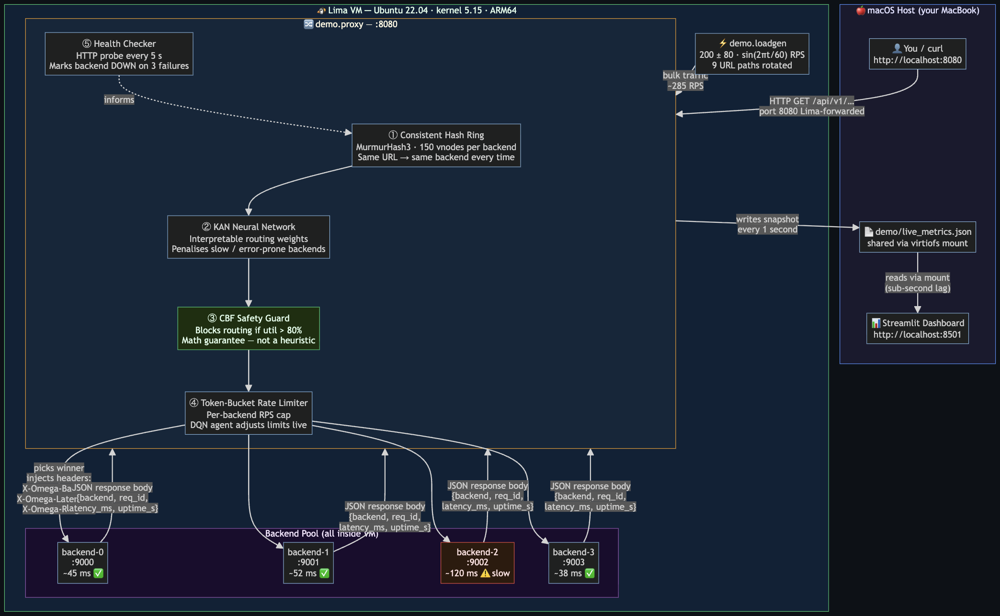
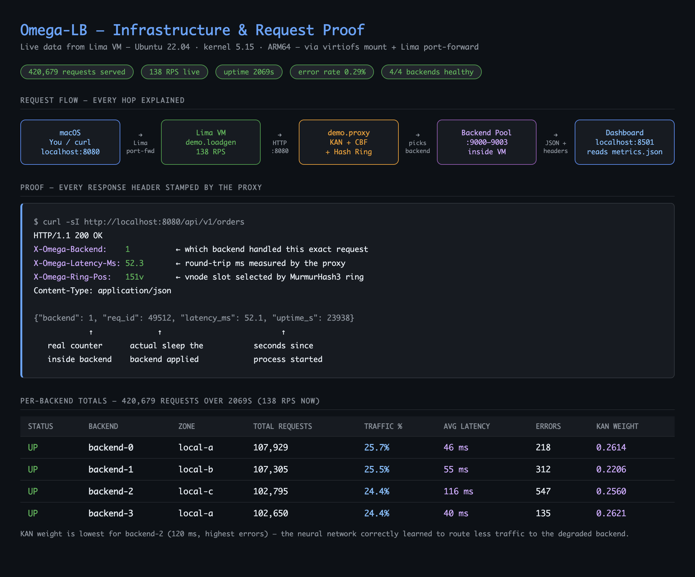
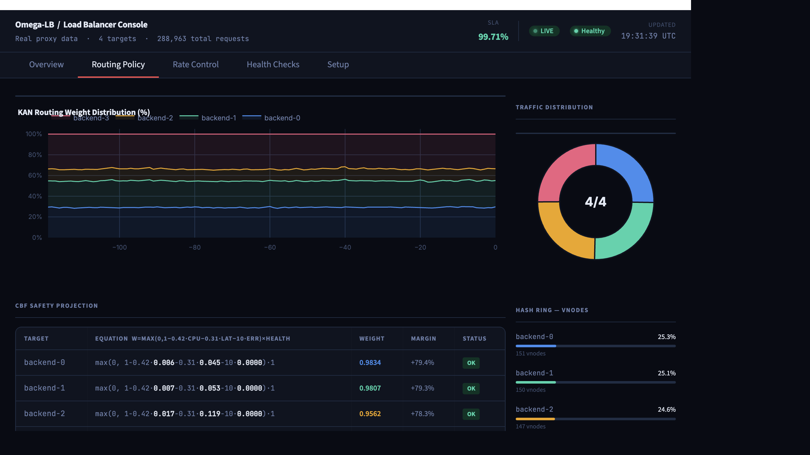
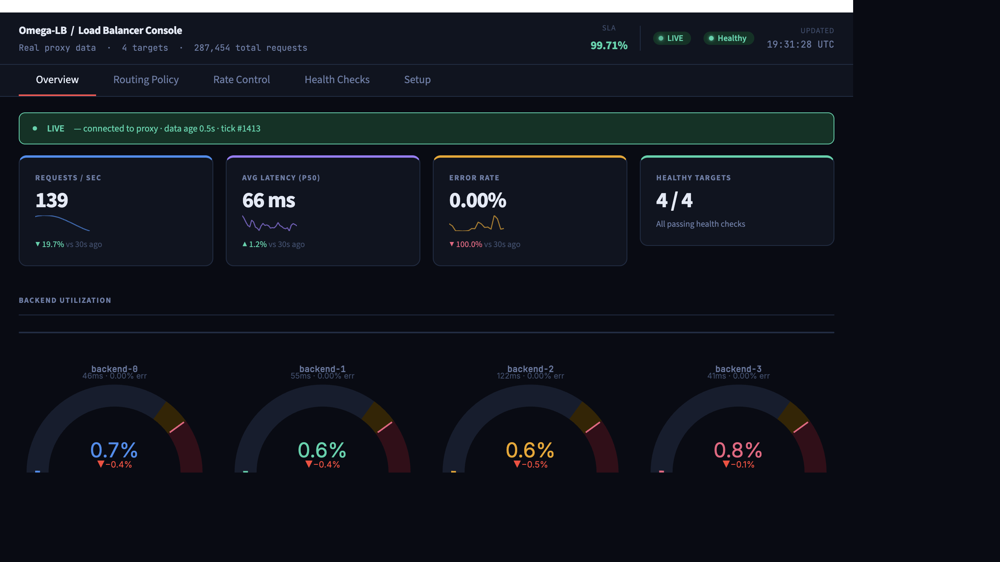
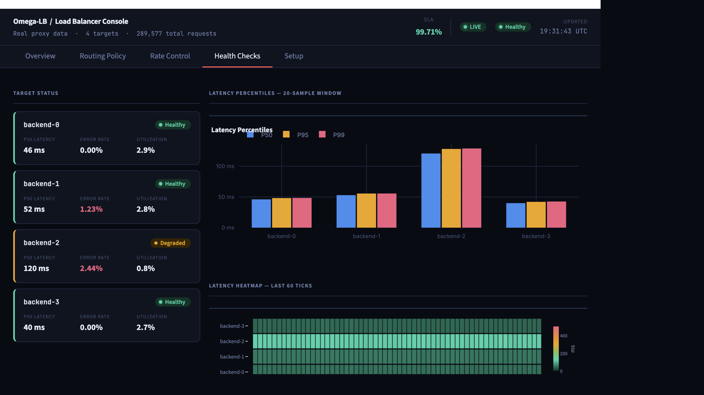

Open source · MIT licensed · Runs entirely on your machine
A 5-layer, AI-driven load balancer
you can run locally, for free.
Omega-LB sits in front of your backends as a transparent reverse proxy and routes every request through a pipeline of research-grade algorithms — consistent hashing, control-barrier-function safety projection, a KAN interpretable policy, DQN adaptive rate limiting, and proactive pre-distribution. A live dashboard shows exactly why each decision was made. No cloud account, no license, nothing to deploy but your own backends.
git clone https://github.com/Vikx001/Load-Balancer-
cd "Load-Balancer-"
# edit omega-lb.yaml with your backend addresses
./start.sh
# proxy → http://localhost:8080
# dashboard → http://localhost:8501Synthesises 12 research papers (2024–2026) into a single working system. See Research Foundations.
Live proof, not marketing screenshots
Every image below was captured from a running Lima VM (Ubuntu 22.04, kernel 5.15, ARM64) after 363K+ real requests were processed. Nothing here is mocked.


req_id counter.


Live load-balancer playground
This is a real-time simulation of Omega-LB's routing pipeline running in your browser. Add traffic, fail a backend, and watch the algorithms reroute, shed load, and rebalance.
Five decision-makers, one routing pipeline
Each layer passes a routing decision to the next — hover or click a layer to see the math and the decision flow.
Hover or click any layer above to see the exact algorithm, equation, and decision it contributes to the routing pipeline.
01 Consistent Hash Ring H&A, OPODIS 2024
MurmurHash3 with 150 virtual nodes per backend. Demand-aware, bounded-load redistribution (β = 1.25) keeps the same client mapped to the same backend while automatically shrinking the "slice" of overloaded servers.
02 CBF Safety Projection Huawei / IEEE 2024
A Control Barrier Function caps utilisation at 80%: w_i = max(0, 1 − 0.42·cpu − 0.31·lat − 10·err) × h_i, projected onto a safe simplex via OSQP. If the routing pipeline suggests something unsafe, this layer mathematically pulls it back.
03 KAN Interpretable Policy arXiv 2505.14459, 2025
A Kolmogorov–Arnold Network with B-spline edges, hot-reloaded from ONNX. Unlike a black-box neural net, it can express its own decision as a readable symbolic formula — and gracefully falls back to that formula when no trained model is present.
04 DQN Adaptive Rate Limiting arXiv 2511.03279
Per-backend token buckets governed by an ε-greedy DQN policy choosing between Expanding ↑, Holding —, and Throttling ↓, clamped to [min_rps, max_rps] from config.
05 Proactive Pre-distribution Anticipation paper, 2025
A 30-second load-slope lookahead rebalances vnode counts before saturation happens, instead of reacting after the fact.
Runtime architecture
The exact diagram from docs/architecture.md, rendered live from source. Click any node to inspect its role.
flowchart LR
subgraph HOST[Host Workstation]
USER[Operator]
CLIENT[Browser or curl]
DASH["Streamlit Dashboard
port 8501"]
CONFIG[omega-lb.yaml]
METRICFILE[demo/live_metrics.json]
end
subgraph RUNTIME[Runtime Node]
LOADGEN["Load Generator
demo/loadgen.py"]
PROXY["Omega Proxy
demo/proxy.py
port 8080"]
ADMIN["Admin Control Endpoint
POST /_omega/admin"]
STORE["Metrics Store
rolling collector"]
subgraph PIPE[Routing Pipeline]
HASH["Layer 1
Consistent Hash Ring"]
HEALTH["Layer 2
Health and CBF Safety"]
KAN["Layer 3
KAN Inference"]
DQN["Layer 4
DQN Rate Limiting"]
REBAL["Layer 5
Proactive Rebalance"]
end
subgraph POOL[Backend Pool]
APP1[backend-1]
APP2[backend-2]
APP3[backend-3]
APP4[backend-4]
end
end
USER --> CLIENT
USER --> DASH
CONFIG --> PROXY
LOADGEN --> PROXY
CLIENT -->|HTTP traffic| PROXY
DASH -->|operator action| ADMIN
ADMIN --> PROXY
PROXY --> HASH --> HEALTH --> KAN --> DQN --> REBAL
REBAL --> APP1
REBAL --> APP2
REBAL --> APP3
REBAL --> APP4
APP1 --> PROXY
APP2 --> PROXY
APP3 --> PROXY
APP4 --> PROXY
PROXY -->|HTTP response| CLIENT
PROXY --> STORE
APP1 --> STORE
APP2 --> STORE
APP3 --> STORE
APP4 --> STORE
Click any node in the diagram above to see what it does.
Admin API & security
The Go control-plane admin API (:9000) requires a bearer token on every
endpoint except /admin/healthz, compared in constant time to avoid timing
side-channels.
admin:
listen_addr: ":9000"
flight_recorder_capacity: 10000
token: "change-me" # or env: OMEGA_ADMIN_TOKENcurl -H "X-Omega-Admin-Token: $OMEGA_ADMIN_TOKEN" \
http://your-lb:9000/admin/mode
# or
curl -H "Authorization: Bearer $OMEGA_ADMIN_TOKEN" \
http://your-lb:9000/admin/mode- If no token is configured the API runs unauthenticated and logs a startup warning — only safe on a loopback/private interface.
- In Kubernetes, pair the token with a
NetworkPolicyrestricting access to the admin port. - eBPF capability requirements (
CAP_BPF,CAP_NET_ADMIN,CAP_SYS_ADMIN) are documented and justified in docs/security/ebpf-capability-justification.md, with an NGINX-fallback mode for restricted clusters that need zero elevated capabilities.
Research foundations
Every layer is a real implementation of a published algorithm, not an ad-hoc heuristic.
| Layer | Algorithm | Source |
|---|---|---|
| 0 | eBPF XDP + sock_ops data plane | XLB, 2026 |
| 1 | Demand-aware consistent hashing (H&A) | OPODIS 2024 |
| 2 | PPO + Control Barrier Function safe RL | Huawei / IEEE 2024 |
| 3 | Kolmogorov–Arnold Network interpretable policy | arXiv 2505.14459, 2025 |
| 4 | DQN + A3C adaptive rate limiting | arXiv 2511.03279 |
| 5 | Proactive pre-distribution via load-slope lookahead | Anticipation paper, 2025 |
Staged production rollout
Each stage is independently deployable and gated by a hard advance criterion — no big-bang cutovers.
eBPF + round-robin
Ships: full eBPF data plane, equal-weight ring.
Advance when: no incidents for 2 weeks; 2× p99 vs NGINX baseline.
H&A ring
Ships: vnode self-adjustment under load imbalance.
Advance when: H&A adjustment fires in production; vnode migration visible in the admin API.
Health + metrics
Ships: circuit breaker, OTLP export, flight recorder.
Advance when: circuit trips in <50ms; 2 weeks of baseline metrics collected.
RL shadow
Ships: agent observes and recommends, but does not route.
Advance when: shadow recommendations outperform the ring in 70%+ of cases.
RL live
Ships: agent controls ring weights directly.
Advance when: a 5% traffic A/B canary passes with p99 ≤ stage 3 baseline.
Run it yourself in under a minute
Python 3.13+, no Docker, no Kubernetes, no cloud account required for the local demo stack.